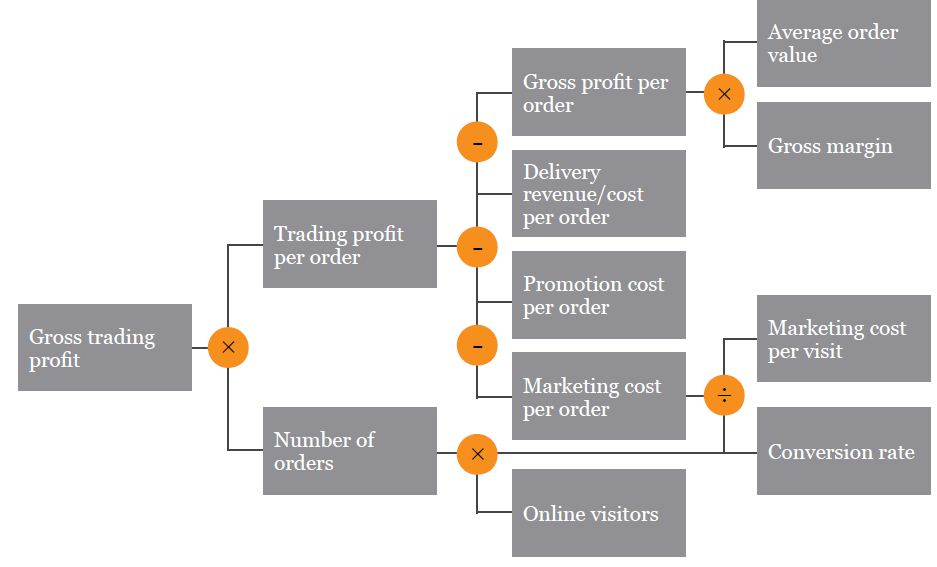
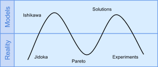
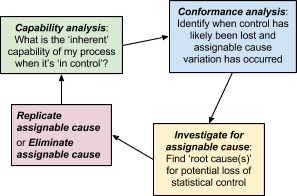

pkb contents
> performance management | just under 3637 words | updated 12/27/2017
Per Sharda et al. (2014), BPM is also called corporate performance management (CPM), enterprise performance management (EPM), and strategic enterprise management (SEM). Performance management relates to the core managerial activity of
strategy
in the following way (called the "closed-loop BPM cycle"; Sharda et al., 2014):
|
Strategize
|
Plan
|
Monitor/Analyze
|
Act/Adjust
|
|
Where do we want to go?
|
How do we get there?
|
How are we doing?
|
What do we need to do differently?
|
-
Mission
-
Values
-
Goals
-
Objectives
-
Incentives
-
Strategy maps
|
-
Budgets
-
Plans
-
Forecasts
-
Models
-
Initiatives
-
Targets
|
-
Performance dashboards
-
Reports
-
Analytic tooles
|
-
Interpret
-
Collaborate
-
Assess
-
Decide
-
Track
|
Sharda et al. (2014, p. 131) cite Eckerson (2009) on the properties of KPIs:
-
"Strategy:
KPIs embody a strategic objective.
-
Targets:
KPIs measure performance against specific targets. Targets are defined in strategy, planning, or budget sessions and can take different forms (e.g., achievment targets, reduction targets, absolute targets).
-
Ranges:
Targets have performance ranges (e.g., above, on, or below target).
-
Encodings:
Ranges are encoded in software, enabling the visual display of performance (e.g., green, yellow, red). Encodings can be based on percentages or more complex rules.
-
Time frames:
Targets are assigned time frames by which they must be accomplished. A time frame is often divided into smaller intervals to provide performance mileposts.
-
Benchmarks.
Targets are measured against a baseline or benchmark."
KPIs can be classified (Sharda et al., 2014, p. 131):
-
Outcomes
AKA lagging KPIs - show results of past activities
-
Drivers
AKA leading indicators AKA value drivers AKA operational KPIs - measure activities that have a significant impact on important outcomes
-
Customer performance:
customer satisfaction, speed and accuracy of issue resolution, customer retention
-
Service performance:
service-call resolution rates, service renewal rates, service level agreements, delivery performance, return rates
-
Sales operations:
new pipeline accounts, sales meetings secured, conversion of inquiries to leads, average call closure time
-
Sales plan/forecast:
price-to-purchase accuracy, purchase order-to-fulfillment ratio, quantity earned, forecast-to-plan ratio, total closed contracts
Per Sharda et al. (2014, pp. 136-137), "Measures should:
-
focus on key factors
-
mix past, present, and future
-
balance the needs of shareholders, employees, partners, suppliers, and other stakeholders
-
start at the top and flow down to the bottom
-
have targets that are based on research and reality rather than arbitrary
Or, fundamentally: "Measures need to be derived from the corporate and business unit strategies and from an analysis of the key business processes required to achieve those strategies."
Per Sharda et al. (2014), the balanced scorecard approach to performance management was developed in 1992 by Kaplan and Norton. They quote: "Central to the BSC methodology is a holistic vision of a measurement system tied to the strategic direction of the organization. It is based on a four-perspective view of the [business] world" (p. 132), in which the "nonfinancial objectives [perspectives] form a simple causal chain [or ***strategy map]*** with
'learning and growth'
driving
'internal business process'
change, which produces
'customer'
outcomes that are responsible for reaching a company's
financial
objectives" (p. 134). 'Balance' is sought in multiple dimensions:
-
Financial and nonfinancial
-
Leading and lagging
-
Internal and external
-
Quantitative and qualitative
-
Short term and long term
"[C]ustomer focus and customer satisfaction ... [t]hese are leading indicators ... [and] in developing metrics for satisfaction, customers should be analyzed in terms of kinds of customers and the kinds of processes for which we are providing a product or service to those customer groups" (Sharda et al., 2014, p. 133).
The financial perspective does not need much advocacy or clarification. It is the domain of
corporate finance and accounting;
is subject to regulation and shareholder oversight; and includes many well-established metrics---although, Sharda et al. suggest---"there is perhaps a need to include additional financial-related data, such as risk assessment and cost-benefit data, in this category" (2014, p. 133).
This "includes employee training, knowledge management, and corporate cultural characteristics related to both individual and corporate-level improvement ... it also includes things like mentors and tutors within the organization, as well as that ease of communication among workers that allows them to readily get help on a problem when it is needed" (Sharda et al., 2014, p. 133).
Measuring and managing "processes the organization must excel at in order to satisfy its shareholders and customers" (Sharda et al., 2014, p. 134).
"In the quality arena, variability [denoted by sigma] is synonymous with the number of defects"; while its original application is to
process improvement
,
Six Sigma
[can be] a performance management methodology aimed at reducing the number of defects in a business process to as close to zero DPMO [defects per million opportunities] as possible." For existing processes, Six Sigma rests on a DMAIC closed-loop model, similar to the BPM model (Sharda et al., 2014, p. 136):
|
Define the goals, objectives, and boundaries of the improvement activity. At the top level, the goals are the strategic objectives of the company. At lower levels---department or project levels---the goals are focused on specific operational processes.
|
Measure the existing system. Establish quantitative measures that will yield statistically valid data. The data can be used to monitor progress toward the goals defined in the previous step.
|
Analyze the system to identify ways to eliminate the gap between the current performance of the system or process and the desired goal.
|
Initiate actions to eliminate the gap by finding ways to do things better, cheaper, or faster. Use project management and other planning tools to implement the new approach.
|
Institutionalize the improved system by modifying compensation and incentive systems, policies, procedures, manufacturing resource planning, budgets, operation instructions, or other management systems.
|
For creation of new processes, the model is DMADV (define, measure, analyze,
design, verify).
Per Dennis et al. (2012),
|
Potential business value
|
Low-moderate
|
Moderate
|
High
|
|
Project cost
|
Low
|
Low-moderate
|
High
|
|
Breadth of analysis
|
Narrow
|
Narrow-moderate
|
Very broad
|
|
Risk
|
Low-moderate
|
Low-moderate
|
Very high
|
BPA is focused on making current processes more efficient through automation; it requires thorough analysis of the current system.
This entails asking current system users about problems they face or features they desire. Problems identified with this technique are often related to UI and their resolution produces little if any business value.
This entails asking current system users to explore the root causes of problems they've identified (since these problems may only be symptoms). Root causes may be uncovered by asking "Why?" five times; causal relationships may be represented as a hierarchy, web, or fishbone/Ishikawa diagram.
BPI goes beyond increased efficiency to the realm of increased effectiveness, for instance taking advantage of new opportunities and technologies.
First, major processes are timed; second, all individual steps in those processes are timed. If the sum of step durations is smaller than the overall duration, this indicates a need for improvement --- which may be achieved through
integration
(fewer people involved in doing the work across its lifecycle) or
parallelization
(steps being done concurrently).
Steps in a process are costed, and improvement efforts are focused on the costliest step.
Examine competitors to identify performance targets and process improvements.
BPR is a radical upending of current business processes and systems, so spends little time analyzing them. Per Rigby (2015; also gives recommendations for further reading), a BPR effort focuses on:
-
Reorienting organizational culture towards user needs
-
Reorganizing traditional functional departments into cross-functional teams
-
Redesigning and improving core processes, perhaps using IT to:
-
Reduce costs, waste, and cycle times
-
Increase quality
Trying to think about the business from the perspective of users' ultimate goals and needs (recognizing that your product or service may be only a means to an end).
Reviewing existing and emerging technologies and asking how they might be applied in your company (either as a process improvement or a product).
Systematically (but as a thought exercise) eliminating each step in a process, and asking what the implications are.
These notes are based on Jeevon Powell's class,
Process Improvement Tools.
See
notes on systems modeling.
These notes are based on Christian Terwiesch's Coursera class,
Intro. to Operations Management.
Strategy and assessment often reference four
operational dimensions:
-
Cost
-
Time
-
Variety/responsiveness to consumer tastes
-
Quality (performance, conformance)
Between any two dimensions, there may be a
tradeoff;
obtain this curve by locating the performance of existing companies for any two dimensions. Then the question is whether your company is operating on the frontier or within it.
Business processes underlie performance. One way to measure them: graph flow units vs. time, showing cumulative inflow and cumulative outflow. Then:
-
(Instantaneous) inventory is the vertical distance between c.inflow and c.outflow
-
Flow time is the horizontal distance between c.inflow and c.outflow—the time a flow unit spends in the system
Create a process flow diagram aka value stream map showing how flow units are transformed from inputs to outputs by process activities. Represent wait times, lines, or inventories with triangles, and activities with boxes (labeled with activity time in units, and m, the number of workers or resources). Then:
-
Processing time is the sum of all the individual activity times
-
Capacity is driven by processing time: m/processing time
-
The bottleneck is the activity with lowest capacity, and this lowest capacity is the overall process capacity
-
Flow rate aka throughput is min{demand_rate, process_capacity}, so flow rate is driven by these factors
-
Utilization is flow_rate/capacity (dimensionless)
Realistically, processing times will vary from flow unit to flow unit. Flow units may even follow different pathways through all possible process activities. So, how to find the bottleneck and determine the flow rate? Depict multiple flow units on same process diagram, symbolized as types of flow units, then:
-
Approach #1, “adding up demand streams”: (1) Compute capacity of each process activity: m/activity_time (2) Compute demand experienced by each activity (3) Compute implied utilization as ratio of demand to capacity (can sum to more than 100%); now, the activity with highest implied utilization is the bottleneck
-
Approach #2, “minutes of work”: (1) Based on m, how many minutes of work per hour can each activity supply? (2) Calculate how many minutes of work is required by each demand stream (3) Compute ratio of minutes required to minutes available; highest is the bottleneck
Why focus on this when labor seems to contribute less to modern firms’ costs? —because many firms keep labor costs off their balance sheet by ‘outsourcing’ them to their suppliers. If you account for labor in the cost of goods supplied, the role of labor becomes evident.
-
Labor content: sum of all the individual activity times
-
Cycle time: 1/flow_rate
-
All activities except the bottleneck have idle time=cycle_time-process_time, and the sum of these is direct idle time
-
Average labor utilization is labor_content / (labor_content+direct_idle_time)
-
Cost of direct labor: total wages/time / flow_rate/time
Inventory=Flow_rate*Flow_time. Given any two variables, can solve for a third (especially flow time); also, can decide how to manipulate outcomes by adjusting a variable. Note that flow time here is essentially average flow time, a line fitted to the actual data recorded from observations of inflow and outflow. “Not an empirical law; to prove it, we need to turn to stochastic optimization.”
Cost_Of_Goods_Sold/Inventory. Gives the amount of time that a flow unit spends inside the process; comes from Little’s law (where COGS=Flow_rate). High inventory turns can dramatically reduce inventory costs (capital, storage, obsolescence). Per unit inventory costs=Annual_inventory_cost/Inventory_turns.
Motivating question here is why should there be inventory? What are the drivers of inventory? (Note that, per Little’s law, these same factors are implicit drivers of flow time.) Contrast McDonald’s and Subway—not all companies use inventory to increase flow rate; there are make-to-stock vs. make-to-order strategies.
-
The reason is variability of activity times; workers do not “work like robots”, so “buffer or suffer”.
-
Reasons for inventory: buffer seasonal demand, internal demand (between processes or activities), customer demand, inherent time lag in production (e.g., aging cheese).
Frederick Winslow Taylor (1911),
Principles of Scientific Management.
. In general, (multifactor) productivity is a ratio of output_produced / input(s)_used.
-
Basic productivity ratio is output/input; at firm or industry level, “output” is revenue, and “input” is cost categories
-
Disaggregate ratio to pinpoint source of productivity difference:
-
Productivity = Operational_yield * Transformation_efficiency * Per-unit_capacity_cost
-
Error
-
Revenue/Cost = Revenue/Output * Output/Capacity * Capacity/Cost
-
Waste (or inefficiency) may be represented as the distance between a firm and an industry-wide PPF
-
Overproduction: Produce sooner or in greater quantities than required by customers or inventories
-
Transportation: Unnecessary, unergonomic movement (Taiichi Ohno: “Moving is not necessarily working”)
-
Rework: Having to doing it right the second time; called “bounce backs” in hospitals
-
Over-processing: Doing more work than is required to meet the customer’s demands; driven by operator’s high standards, or ignorance about customers’ actual requirements
-
Inventory: Poorly managed, can be one of the biggest forms of waste. Inventory may take the form of raw materials, works in progress (WIP), or finished products.
-
Waiting: Underutilizing resources because of poor process design
-
Intellect: Esp. the intellect of workers
-
“Productivity [i.e., capacity improvements] are not the goal in and of themselves; the goal is to save money”
-
Profit: Process_capacity*Per_capita_revenue - (Fixed_costs + Variable_costs)
-
“How does the profit change as we change the operational variables?”
-
“Every second counts—however, not every second counts equally.” The largest impact comes from improvements to the bottleneck when demand is not a binding constraint; also, in organizations with large fixed costs and lower marginal costs (can see this by checking the relative slopes of the cost and revenue lines past the break even point).
KPI trees are about “visualizing the relationship between operational variables and the financial bottom line, and are also the starting point for sensitivity analysis wherein we identify those operational variables that have the largest impact.” Map out dependencies between variables, then take the partial derivative of the terminal KPI w/r/t an operational variable or evaluate using a spreadsheet.

-
Available_time=Total_planned_uptime - Downtime
-
Downtime = Break_downs + Product_change_overs
-
Net_operating_time = Available_time - Speed_losses
-
Speed_losses = Idling + Minor_stoppages + Reduced_operating_speed
-
OEE = Net_operating_time - Quality_losses
-
Quality_losses = Defects + Startup_time
-
Availability_rate * Performance_rate * Quality_rate = Value_add_time / Available_time = OEE
-
Takt time is the pace required to keep up with demand: “every person has to dance to the meet of demand”
-
Demand leveling: Average out demand over a period of time
-
Line balancing: Equal processing time at each station (ideal). Calculate takt time; assign tasks such that all processing times fall below the takt time; make sure that all tasks are assigned; and minimize the number of workers needed.
-
Quartile analysis: Observing workers, noting differences in processing time, grouping into quartiles based on processing time, and identifying best practices that appear to shorten processing time
-
e.g. 260% different observed in ER between 10% and 90% quartiles
-
Biggest differences tend to be observed in knowledge-intensive tasks
-
Ford production system: Influenced by Taylor; aspired to optimization of work. Used a moving line, big machinery, economies of scale, standardization of product.
-
Toyota production system: c. 1950s, focused on elimination of waste and matching demand after failure to replicate Ford system in a postwar context where inputs and domestic demand was scarce.
-
Worry about: waste, inflexibility, and variability
-
See
notes on Six Sigma, above
-
Activity yield is %units produced according to specification = 1 - p(defect)
-
Process yield = f(activity_yield); if dependent (Swiss cheese) activities, then product of activity yields, 1-p(defect)n; if independent, then sum, represented as (1-p(defect))
n
.
-
Swiss Cheese model: think of a hole as a defect; as you stack slices of cheese, there is always the chance that all the holes will line up. This redundancy reduces the probability of process failure. Then the process yield is 1-p(defect)
n
.
-
Adding representations of quality to a flow diagram:
-
Dropped flow units: Calculate end demand; calculate yield of each step (include defects); calculate how much each step must produce to meet demand (e.g., a 50% defect rate means that an activity must produce 2xD); calculate implied utilization (D/capacity); highest implied utilization is the bottleneck.
-
Re-worked flow units: Calculate the expected processing time. E.g. if there is a 30% defect rate and defects are re-worked, then the real processing time is 0.7
processing_time + 0.3
rework_time. After this modification, the activity with lowest capacity is the bottleneck.
-
Costs of defects: Say that we pay $2 per flow unit as an input, but receive $20 per flow unit post-processing, as an output. Then the cost of defects depends not on where they occur, but where they are detected—before or after the bottleneck. Before is cheaper. Pre-bottleneck, defect costs are driven by input costs; post-bottleneck, by revenue (opportunity cost).
-
Variability & buffering dilemma:
-
For a 2-step process where each step has p(defect)=0.5, there are four possibilities: both defect-free; first step defective, leaving step 2 “starved”; second step defective, leaving step one “blocked”; and both defective. This variability dramatically lowers the expected flow rate; by adding a buffer, the flow rate may be increased.
-
However, buffers remove the incentive for process improvement; buffering hides problems.
-
Toyota developed the Kanban “demand-pull” card system to manage this dilemma. Kanban cards authorize work, and are themselves authorized by customer demand. This puts a cap on inventory.
Improving a process by reducing internal variability.
-
LSL, USL: lower and upper specification limits
-
Capability score (AKA CP score), where higher is better: (USL-LSL)/(6*process_stdev). Clearly, the CP score can be raised by widening the range between upper and lower specifications, or by decreasing the standard deviation in the process.
-
For interpretation, relates to defect probabilities.
-
Quality targets are often expressed as ppm, parts per million.
-
A “six sigma” quality target corresponds to a defect probability of 0.002 and a capability score of 2.
Help distinguish between normal and abnormal variation; part of statistical process control
-
Common cause variation may be high or low, but has one basic root
-
Assignable cause variation is when the variation stems from multiple sources: “something in the underlying process that changed”, resulting in more variability
-
How to identify assignable causes?
-
Establish LCL, UCL---upper and lower control limits, different from LSL, USL.
-
LCL= mean - 3
stdev; UCL = mean + 3
stdev
-
Plot means of samples against LCL, UCL; if a sample’s mean crosses control limits, we suspect assignable cause.
Detect → Alert → Stop, as quickly as possible, to prevent defects from reaching the bottleneck. In manufacturing assembly lines, jidoka is often implemented with andon cords (for workers to pull, freezing the whole line) and a central andon board (to indicate which station initiated the stop).
-
ITAT is “information turnaround time”, something that is (detrimentally) increased by inventory. Low ITAT means quick feedback and the potential for quick learning.
Looking for root cause(s):
-
Kaizen: Process improvement is best carried out by frontline employees
-
Ishikawa diagram, also called fishbone diagram, for brainstorming; complemented by 5 whys
-
Pareto chart “maps out the assignable causes of a problem in the categories from the Ishikawa diagram, ordering root causes in decreasing order of frequency of occurrance”;
-
Pareto principle: 80% of the defects are explained by 20% of the root causes


Dennis, A., Haley Wixom, B., & Tegarden, D. (2012). Requirements determination. In
Systems analysis and design: An object oriented approach with UML
(4th ed., pp. 109–152). Hoboken, NJ: Wiley.
Rigby, D. K. (2015).
Management tools 2015: An executive’s guide.
Boston, MA: Bain & Company.
Sharda, R., Delen, D., & Turban, E. (2014).
Business intelligence: A managerial perspective on analytics
(3rd ed.). New York City, NY: Pearson.